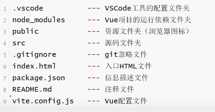
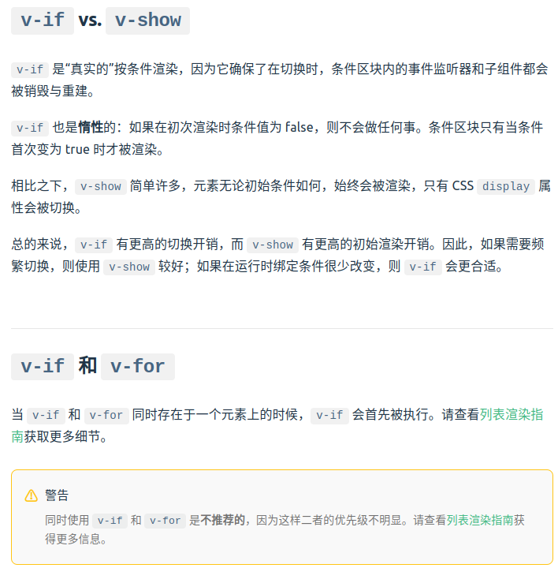

vue.js学习
官网链接： vue官网
什么是 Vue？
Vue (发音为 /vjuː/，类似 view) 是一款用于构建用户界面的 JavaScript 框架。它基于标准 HTML、CSS 和 JavaScript 构建，并提供了一套声明式的、组件化的编程模型，帮助你高效地开发用户界面。无论是简单还是复杂的界面，Vue 都可以胜任。
| 涵义 | 命令 | 备注 |
|---|---|---|
| 创建Vue项目 | npm init vue@latest | 名字不能大写 |
| 启动 | npm run dev | http://localhost:5173/ |
| 安装 | npm/cnpm install | cnpm install安装速度更快 |
| 创建vite项目 | npm create vite@latest temp-demo – –template vue | 基于template样式 |
| 安装element-plus | npm install element-plus @element-plus/icons-vue | 基于vue3的element-plus |
生成的文件涵义

创建完默认的项目，会自动生成很多代码，我们可以删除 src/components下的所有文件，再从App.vue里删除引用，保留script和template，template可以放在script的上面，或者下面，这个顺序是随意的，谁在上谁在下都可以。
1 | <template> |
模板语法：{{ }}双大括号里引入变量，支持常用的js单行语法，不支持多行语法（例如：if else，var 等），建议不要在template里做逻辑运算。
1 | <template> |
原始 HTML：双大括号会将数据解释为纯文本，而不是 HTML。若想插入 HTML，你需要使用 v-html 指令：
1 | <p>Using text interpolation: {{ rawHtml }}</p> |
Attribute 绑定: 双大括号不能在 HTML attributes 中使用。想要响应式地绑定一个 attribute，应该使用 v-bind 指令, 或者简写,把冒号前的v-bind省略(例如: v-bind:id 可以简写成:id,v-bind:disabled 可以简写成:disabled)
1 | <template> |
动态绑定多个属性(通过不带参数的 v-bind，你可以将它们绑定到单个元素上)
1 | <template> |
条件渲染: v-if v-else
1 | <template> |

事件处理和传参: 用法：v-on:click=”handler” 或 @click=”handler”, methods里获取 data 用 this. ;用 e.target.innerHTML 可以修改html value;
1 | <template> |
数组方法变更: 可以使用能改变原数组的方法：1. push()、 2. pop()、 3. unshift()、 4. shift()、 5. splice()、 6. sort()、 7. reverse()；这 7 个方法都被 Vue 重写过，使用它们更新数据能触发页面的重新渲染。
<button @click=”arr.shift()”>删除数组元素
<button @click=”arr.push(‘z’)”>添加数组元素
<button @click=”arr.splice(0, 1, ‘0’)”>修改数组元素
替换数组: map, filter()、concat(), slice() 等函数，对原数组变量进行重新赋值,不会渲染页面,想要渲染,需要给原数组重新赋值.
挂载应用: 应用实例必须在调用了 .mount() 方法后才会渲染出来。该方法接收一个“容器”参数，可以是一个实际的 DOM 元素或是一个 CSS 选择器字符串,
.mount() 方法应该始终在整个应用配置和资源注册完成后被调用。同时请注意，不同于其他资源注册方法，它的返回值是根组件实例而非应用实例。
1 | html |
应用配置: 应用实例会暴露一个 .config 对象允许我们配置一些应用级的选项，例如定义一个应用级的错误处理器，用来捕获所有子组件上的错误：
1 | app.config.errorHandler = (err) => { |
注册一个组件,使得 TodoDeleteButton 在应用的任何地方都是可用的
1 | js |
多个应用实例: 应用实例并不只限于一个。createApp API 允许你在同一个页面中创建多个共存的 Vue 应用，而且每个应用都拥有自己的用于配置和全局资源的作用域。
如果你正在使用 Vue 来增强服务端渲染 HTML，并且只想要 Vue 去控制一个大型页面中特殊的一小部分，应避免将一个单独的 Vue 应用实例挂载到整个页面上，而是应该创建多个小的应用实例，将它们分别挂载到所需的元素上去。
1 | const app1 = createApp({ |
声明响应式状态: 在组合式 API 中，使用 ref() 函数来声明响应式状态,ref() 接收参数，并将其包裹在一个带有 .value 属性的 ref 对象中返回.
在模板中使用 ref 时，我们不需要附加 .value。
1 | import { ref } from 'vue' |
要在组件模板中访问 ref，从组件的 setup() 函数中声明并返回它们
1 | import { ref } from 'vue' |
也可以直接在事件监听器中改变一个 ref
1 | <button @click="count++"> |